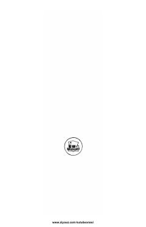

CFHindular hayoti va Chingachguk taqdiri haqidagi klassik sarguzasht asari.
Fenimor Kuperning ushbu mashhur asari hindular va oq tanli ko'chmanchilar o'rtasidagi murakkab munosabatlar hamda Chingachguk hayotining fojiali sahifalarini hikoya qiladi. Asar tabiat qo'ynidagi kurashlar, sadoqat va insoniy qadriyatlar haqida so'z yuritadi.